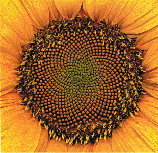

N a t u r | |||
Goldener Schnitt | |||
|
Der Goldene Schnitt ist der Garant der Nicht-Schwingung, weil er zwischen allen Knoten und Maxima liegt.
Er trennt Schwingungen verschiedener Zentren voneinander, separiert die einzelnen Zentren (Wirbel, Teilchen, Organismen),
macht aus ihnen Individuen, die sich nicht mit den Schwingungen des Nachbarn überlagern. Schon im Entstehen und dann im Wachstum folgt das Individuum (Knospe, Blatt, Samenkern) der Stille. Es bevorzugt den 'ruhigsten' Platz, den es erreichen kann, obwohl es selbst Schwingungen aussendet. Auf diese Weise verteilt sich alles im Muster des Goldenen Schnittes. Am Besten realisiert sich dieser Aufbau mit Fibonaccizahlen. Die größere Einheit wird dann eine gesunde Ganzzheit, die sich nicht an einer Stelle aufschaukelt und explodiert. Siehe Video-Link unten (ca. 3 Minuten) Der Mensch sollte seine Wohnungen und Schlafplätze nach dem Vorbild der Pflanzen bauen, um (neben Sicherheit) als Individuum wirkliche Ruhe zu finden, denn dafür sucht er die Räume auf. | |||
 | |||
 | |||
 | |||

| |||
|
BlattstellungEntstehen keine Blattquirle (symmetrische Stellung, Distanzwinkel 180 Grad), sondern liegt die zerstreute oder wechselseitige Blattstellung vor (Dispersion), dann beträgt der Divergenzwinkel weniger als 180 Grad, zum Beispiel 120 Grad (rationales Zahlenverhältnis). Oft kommt es aber zu überhaupt keiner Wiederholung einer Gegenüberstellung zweier Blätter (irrationales Zahlenverhältnis): der Goldene Winkel spielt dann eine Rolle: 360(1-g)=137.51 ° mit g=(sqrt(5)-1)/2=0.618033989 Spiralige
Blattstellung: Der Abstand der Blätter vom Zentrum der Blüte wird in jedem Schritt um einen festen Betrag erhöht. Bild ganz oben: Im mittleren Modell ist der Divergenzwinkel genau der des Goldenen Schnittes, rechts und links daneben wurde er minimal variiert.
Wenn diese Stellung einer beweglichen Strömung entspräche, könnten dann nicht beide Spiralen je einem elektrischen bzw. einem magnetischen Feld entsprechen ? | |||
|
*************
Chemische Tornadosder B-Z-Reaktion: Im Zentrum geht die Oszillation in eine neue Ebene. (B-Z: Belousov-Zhabotinskii) | |||
 | |||
| Bilder aus "Natur und Form" (ISBN 3-88722-213-X)
Weitere gute Quelle (Bild von ca. Mitte der Seite): http://www.mcs.surrey.ac.uk/Personal/R.Knott/Fibonacci/fibnat.html#golden: 
Zwischen den Kernen 55 mal Rechtsherum steil hinein und 34
mal Rechtsherum flach heraus führt zu Ätherüberschuss innen,
denn es gilt Rechtsablenkung für Elektronen im nach unten gerichteten
Magnetfeld (Blume nach oben zur Sonne gerichtet) | |||
|
Irrationale Zahlen, d.h. ihre Anfänge, kann man als Kettenbrüche schreiben. pi wäre demnach pi=3+1/(7+1/(15+1/(1+...))).
Man kann das auch kompakt aufschreiben pi=(3,7,15,1,...). Je größer diese Ziffern sind, desto eher läßt sich die Zahl durch eine rationale Zahl approximieren. Nach dieser Definition wäre z=(1,1,1,1,1...) die irrationalste Zahl durch einfache Rekursion, die Zahl mit der schwächsten Konvergenz zur rationalen Näherung. Oder sogar die Zahl g=(0,1,1,1,1...) ? Das ist der Goldene Schnitt, definiert über g=1/(1 + g). Das zweite g wird nochmal durch das erste ersetzt usw., sozusagen die perfekte unendliche Rekursion aus einfachsten Einheiten. Vielleicht ist manchem die andere Darstellung des Goldenen Schnitttes geläufiger: Das Ganze verhält sich zum größeren Teil, wie der größere Teil zum kleineren 1: g = g : ( 1 - g ). Am rechtwinkligen Dreieck davon abgeleitet, erhält man Phi=1+g=1.6180339=(sqrt(5)+1)/2.
| |||
|
Home | |||
{kind=link}